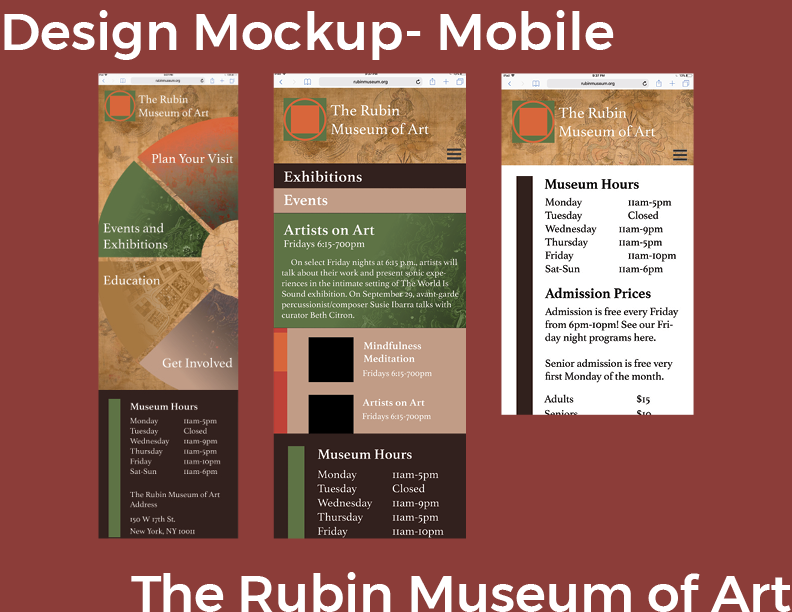

For my final project in IML 300: Reading and Writing the Web, I worked in a two-partner team to redesign the website of the Rubin Museum in New York. The goal was to focus on design documentation including user stories, as well as responsive, multiple-platform design.
There were two things that makes the Rubin stand out from the market of New York museums: its unique collection, which focuses on Himalayan art, and its extensive community building through workshops and events. We decided to highlight those two elements in our redesign. We put emphasis on navigation, making sure there were multiple ways to get to each page on the screen. To capture the history and life of the museum, I paired the colorful navigational elements with aged-paper Himalayan ink paintings from the actual collection.